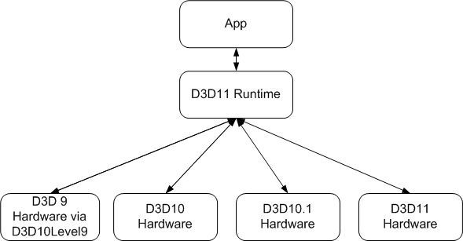

This section discusses how Direct3D 11 is designed to support both new and existing hardware, from DirectX 9 to DirectX 11.
This diagram shows how Direct3D 11 supports new and existing hardware.

With Direct3D 11, a new paradigm is introduced called feature levels. A feature level is a well defined set of GPU functionality. Using a feature level, you can target a Direct3D application to run on a downlevel version of Direct3D hardware.
The 10Level9 Reference section lists the differences between how various ID3D11Device and ID3D11DeviceContext methods behave at various 10Level9 feature levels.
| Topic | Description |
|---|---|
| Direct3D feature levels | This topic discusses Direct3D feature levels. |
| Exceptions | This topic describes exceptions when using Direct3D 11 on downlevel hardware. |
| Compute Shaders on Downlevel Hardware | This topic discusses how to make use of compute shaders in a Direct3D 11 app on Direct3D 10 hardware. |
| Preventing Unwanted NULL Pixel Shader SRVs | This topic discusses how to work around the driver receiving NULL shader-resource views (SRVs) even when non-NULL SRVs are bound to the pixel shader stage. |
| Topic | Description |
|---|---|
| How To: Get the Device Feature Level | How to get a feature level. |